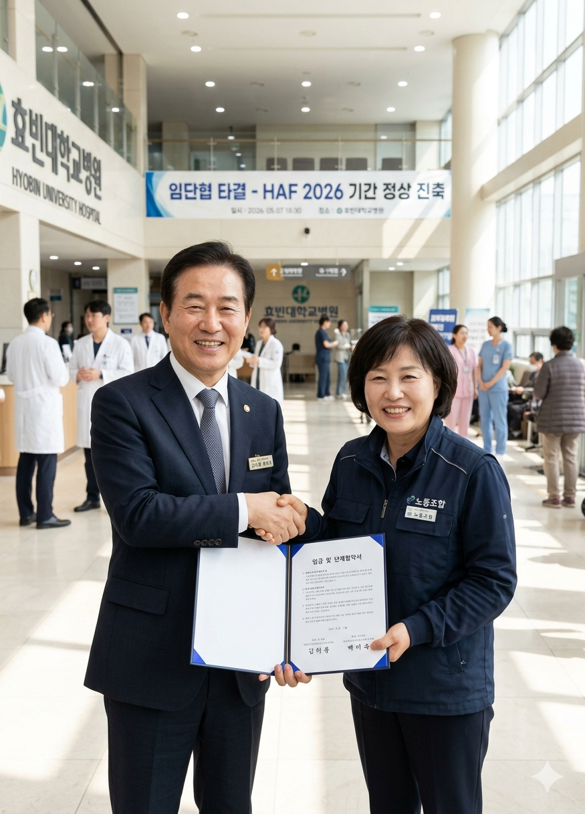

[의료] 대학병원 노사 협상 타결... "축제 기간 의료 공백 없다"
입력 2026.05.07 11:17
효빈대병원 노사, 임금 5.2% 인상 및 간호 인력 충원안 극적 합의
역대 최대 규모 HAF 2026 개막 직전 파업 위기 넘겨... 권역응급의료센터 정상 가동
김의룡 병원장 "환자 생명과 수백만 방문객 안전이 최우선... 대승적 결단에 감사"

[효빈일보 = 박건강 기자] 지역 최대 의료기관인 효빈대학교병원의 노사 임금 및 단체협약(임단협) 교섭이 파업 예고일을 하루 앞두고 극적으로 타결됐다. 이로써 이번 주말 역대 최대 규모로 개최되는 효빈 애니메이션 페스티벌(HAF) 기간 동안 우려되었던 '의료 공백' 사태를 피하게 됐다.
7일 효빈대학교병원 노사는 전날 오후부터 시작된 밤샘 마라톤 교섭 끝에 오전 8시경 잠정 합의안 도출에 성공했다고 밝혔다. 주요 합의 내용으로는 ▲기본급 5.2% 인상 ▲야간 및 교대 근무자 수당 현실화 ▲응급실 및 중환자실 간호 인력 120명 추가 충원 등이 포함됐다.
당초 노조 측은 만성적인 인력 부족으로 인한 의료진의 '번아웃'을 호소하며 파업을 예고했으나, 수백만 명의 인파가 모이는 HAF 2026 개막을 앞두고 자칫 대형 재난이나 응급 상황 발생 시 시민과 관람객의 안전이 심각하게 위협받을 수 있다는 데 노사가 공감대를 형성하며 한 발씩 양보한 것으로 전해졌다.
김의룡 효빈대학교병원장은 이날 담화문을 통해 "밤낮없이 헌신하는 의료진의 노고에 깊이 공감하며, 병원의 발전과 시민 안전을 위해 대승적인 결단을 내려준 노동조합 측에 진심으로 감사드린다"며, "특히 전 세계에서 수백만 명이 우리 시를 찾는 HAF 기간 동안, 단 한 건의 의료 공백도 발생하지 않도록 1,350병상 본원과 권역응급의료센터를 24시간 철저히 비상 가동할 것"이라고 밝혔다.
노조 관계자 역시 "우리의 노동권도 중요하지만, 2007년 '효빈의 붉은 겨울' 당시 도로가 막혀 환자가 목숨을 잃었던 참사를 병원 구성원 모두가 뼈저리게 기억하고 있다"며, "시민들이 안심하고 세계적인 축제를 즐길 수 있도록 현장을 든든하게 지키겠다"고 화답했다.
효빈시는 이번 노사 타결에 즉각 환영의 뜻을 표했다. 효빈시 보건행정과 관계자는 "HAF 행사장과 캠퍼스가 인접한 효빈대학교병원은 축제 기간 중 발생할 수 있는 온열질환자나 외상 환자 처치에 있어 핵심적인 역할을 담당한다"며, "파업 위기 극복을 계기로 시청-소방-병원 간 핫라인을 더욱 강화해 완벽한 응급 의료 지원 체계를 유지하겠다"고 말했다.